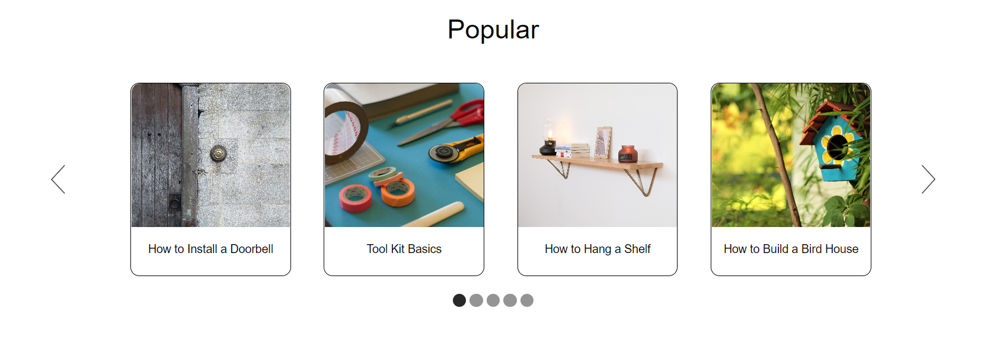
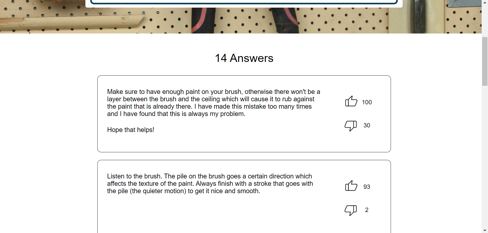
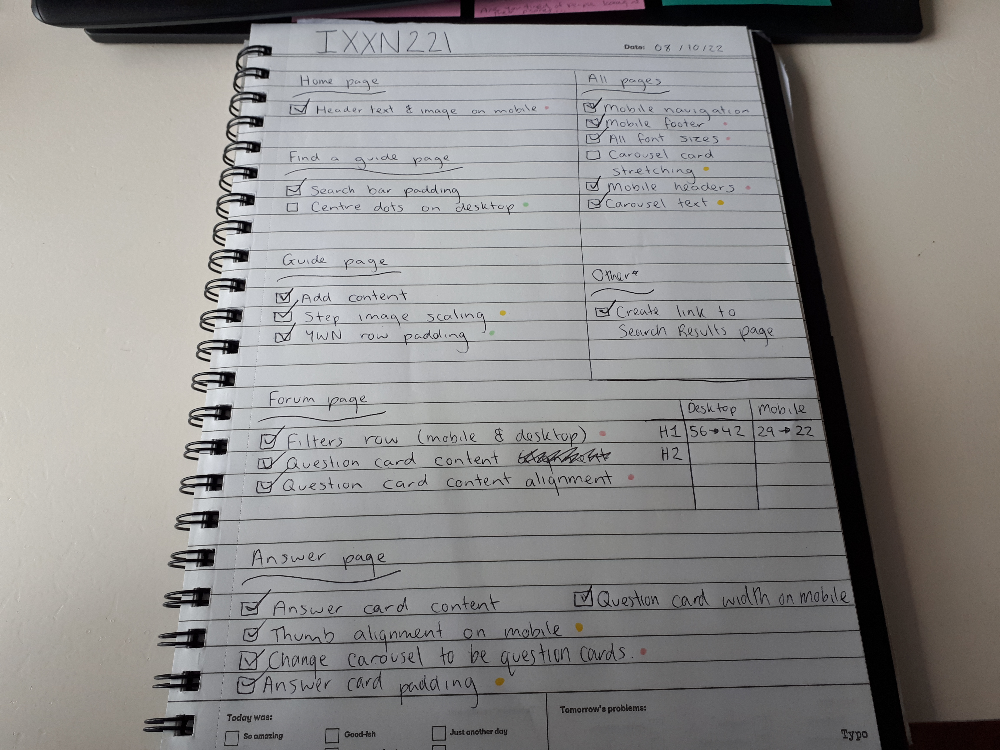

Think Like a Coder
This week's lecture was a general overview of how you might use all of the techniques we have learned in this course to create a website. As I have begun coding my website already and have done a lot of coding in other languages, I have figured out how I might use all of the elements together and how to debug my code, so while there wasn't any new information in this video it has given me a good refresher on all of the techniques and will be useful to look back on if I get too overwhelmed by the number of nested grids and CSS I have.
I did find the idea that a website is just made up of grid inside of grids really useful. Often you don't think of text and images to be within a grid if they don't have that display property, so this idea creates a nice visualisation of how to start building up a website, especially if it is a complicated design.
The lecture also discussed using Google Fonts to import fonts into the code. I have done this before at high school so I am aware of how to do it already. Using Google Fonts is a good way to create a nicer design rather than using the default fonts and is something that is used a lot in the real world, meaning it is an important skill to learn how to do. I will be using this technique within my design to get the same fonts as what is in my Figma design.
Assignment Progress
In today's class, I worked on getting the layout of the carousels looking nice and getting the responsiveness to work so that there were four items on desktop but only one on mobile.
The main thing I had been struggling with last week as getting both arrows to show up and having the carousel be symmetrical as items kept wrapping underneath or not showing on the screen. After talking with a tutor, we found that the issue was using the same class for each element and having nth-of-type in the CSS. Once I had given them each their own class the code seemed to work fine. I then had to use the 'display:none' property to make the carousel only show one image on mobile view.
I then added these carousels to my guide and find a guide pages. I had to change the number of items to be three on the find a guide page which took a bit of maths to get the proportions right but we got there in the end.
Assignment Progress (04-10-22 & 05-10-22)
Over the last two days I worked on getting the layouts for the category and search results pages. These pages use the same grid layout so were easy to do together. I used the carousels I had on the find a guide page and adjusted them to remove the arrows. I then duplicated them to the number of rows I needed. I added a four-item carousel to the bottom of the search results page. I had to readjust the sizing of this as it did not quite look the same as the other ones (i.e. more squished).
Once I had completed that, I moved on to creating the layout for the ask a question page as that is a very simple layout.
Assignment Progress (06-10-22 & 07-10-22)
Today and yesterday I worked on the layouts for the rest of my pages. I finished up the ask a question page, completed the post made page and started on the layout for the forum page. While I got the tiles done quite quickly I am having a bit of trouble with the filters as the display property doesn't seem to be working as I want it to. I will have to play around ith this further. I also need to fix up the sizing and placements of the conetnt within the tiles.
I also created the layout for the answer and guide page. I still need to fix up the sizing of some of the content but overall these pages are looking good. I managed to get the hover effect working on the thumbs on the answer cards by switching the icon images when they are hovered on.
One other thing I added was more interactivity. While I am not using any Javascript for this website, I managed to find out how to make dropdowns and text boxes within HTML so that the user can interact with these elements without them actually working. I updated my ask a question and find a guide pages to implement these things.
Assignment Progress (08-10-22)
Today's focus was to get all of the contnet into my website and work on the main responsiveness issues that I still had.
I started by adding a hamburger menu to my navigation on mobile view. I used the 'display:none' property to hide the menu on desktop and hide the other links on mobile. I then adjusted the layout of the grid so that the logo would go to the left of the screen rather than stay in the middle. I left this till last as I thought it would be a difficult task, however after having to do something similar whne hiding elements in my carousels, I found this quite easy to do.
I then moved on to getting the filters to work responsively on the forum page. I had been having difficulty getting four things to show up on desktop and only one on mobile, but after playing around with the grid and display properties, I managed to get it to work, and I used the dropdown and search bar code to make the filters/textbox interactive.
Assignment Progress (09-10-22)
As it is the day before hand in, I am now just touching up some things, mainly regarding the responsiveness. I made a checklist so I knew all of the things I had to fix on each page:
I needed to fix up my font sizing to make it consistent across all of my pages and scale in the same way for smaller/larger devices. When I used the font sizes I had used on Figma, the text was too big for the screen, so I couldn't copy them straight over and had to come up with new sizes - something that took up quite a bit of time.
I then had to adjust the sizes of some of the images and elements that didn't shrink with the screen size. This was an issue around my carousels and footer. I also touched up a few alignment and spacing issues.